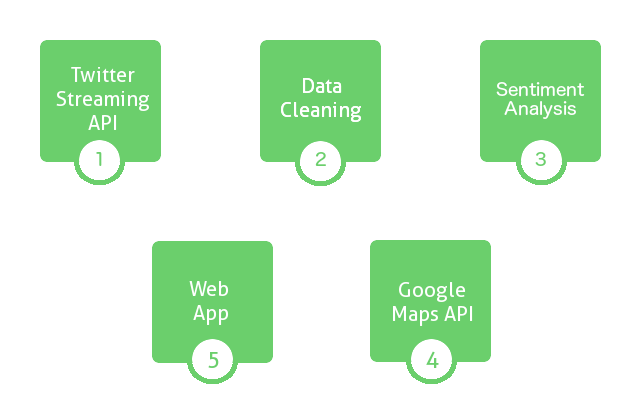

{% extends "base.html" %}
{% block content %}
    <div class="container">
        <div class="row">
            <div class="col-md-12">
                Here is a flow diagram which briefly outlines the steps that the application
                takes to give the visualisation that you can see. 
            
                <div class="container">
                    
                </div>
            </div>
        </div>
    </div>
{% endblock %}
